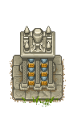

Marble columbarium
| Marble columbarium | |
|---|---|
 | |
Basic information
| |
Required Technology :
|
Cremation II |
Building Information
| |
Horizontal x Vertical :
|
4X4 |
Rotatable :
|
False |
Location(s)
| |
| Graveyard | |

Gives a static +20  when built.
when built.
Cost
| Icon | Materials Required | Energy | Quality provided | Notes |
|---|---|---|---|---|
| 4× A polished brick of marble |
- |
+20 |
Graveyard enhancement |
| ||||||||